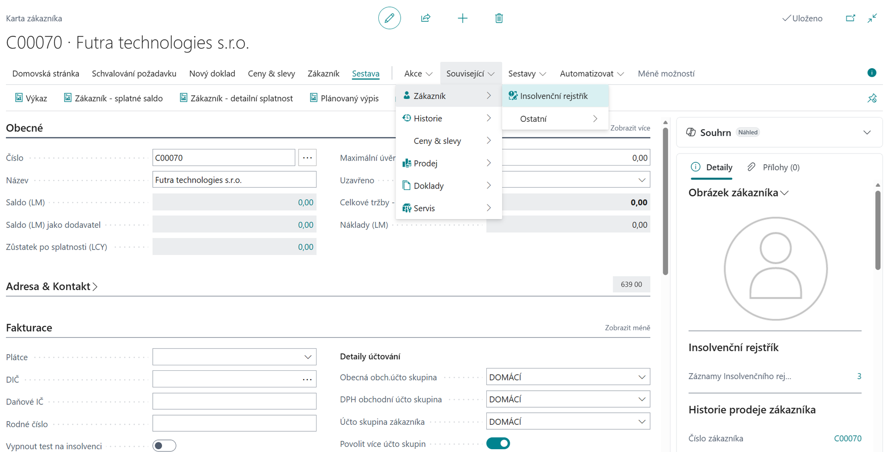
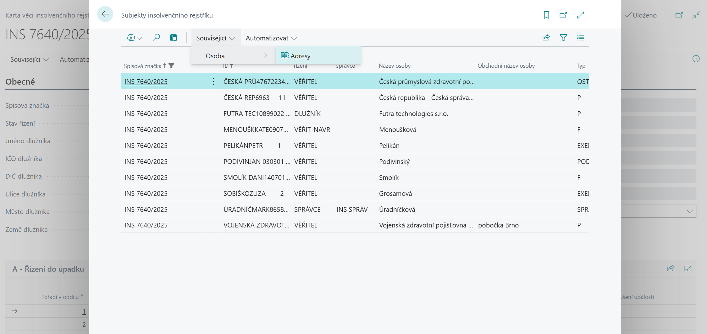
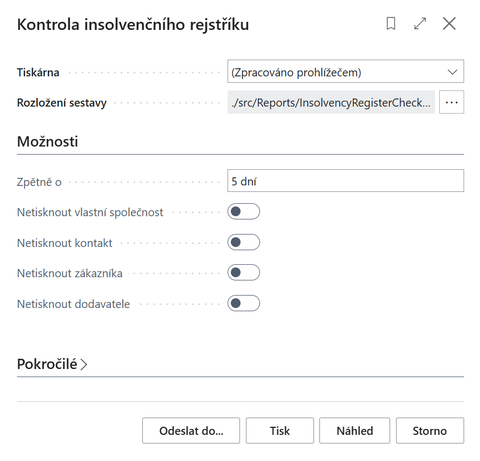
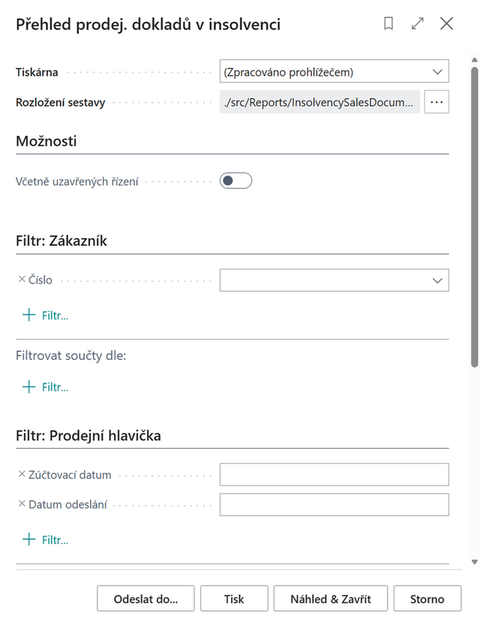
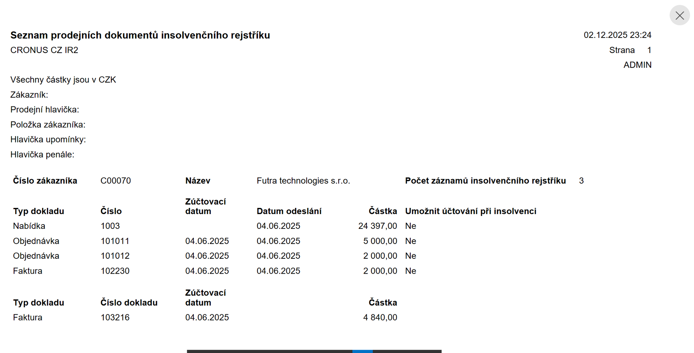

Insolvenční rejstřík
Aktualizace: 30.11.2025
Insolvenční rejstřík je rozšíření pro Microsoft Dynamics 365 Business Central, které umožňuje automatické ověřování platební schopnosti zákazníků a dodavatelů na základě dat stahovaných z oficiálního Insolvenčního rejstříku České republiky https://isir.justice.cz. Insolvenční rejstřík (ISIR) je veřejně dostupná online databáze spravovaná Ministerstvem spravedlnosti ČR, která eviduje informace o insolvenčních řízeních fyzických i právnických osob.
Databáze obsahuje:
- Rozhodnutí insolvenčního soudu (zahájení řízení, úpadek, oddlužení apod.)
- Přihlášky pohledávek věřitelů
- Zprávy insolvenčního správce
- Identifikační údaje o dlužníkovi (jméno, IČO, datum narození)
- Spisovou dokumentaci řízení v chronologickém pořadí
Rejstřík je důležitý pro:
- Věřitele – kvůli přihlášení pohledávek
- Dlužníky – pro sledování průběhu řízení
- Podnikatele – pro prověření obchodních partnerů
- Veřejnost – pro ověření finanční spolehlivosti osob a firem
Záznamy zůstávají v rejstříku 3 roky po ukončení řízení.
Aplikace Insolvenční rejstřík pro Business Central zpřístupňuje tato veřejná data přímo do Business Central tak, aby měla společnost tyto informace přímo integrovány do obchodních procesů. Zavede-li firma do systému nového partnera (zákazníka, dodavatele, kontakt) se záznamem v ISIR, popř. se zavedený partner do ISIR dostane dodatečně, uživatel systému je o této skutečnosti informován.
Klíčové funkce
- Zobrazení informace o insolvenčním řízení na kartě zákazníka, dodavatele, kontaktu a Informacích o společnosti
- Varování uživatele při práci s prodejním či servisním dokladem
- Nastavení zamezení účtování dokladů
- Možnost vypnout test na insolvenci pro konkrétního partnera (zákazníka, dodavatele)
- Umožnit účtování při insolvenci pro konkrétní doklad
- Kompletní informace o probíhajících i ukončených insolvenčních řízeních partnerů přímo v Business Central
Cloud verze a serverová architektura
Pro cloudové verze Business Central je využívána serverová část aplikace, která zajišťuje:
- Centralizované načítání všech záznamů z ISIR (Insolvenční rejstřík)
- Poskytování API pro dotazy z klientské části IR
- Automatickou synchronizaci dat mezi serverem a klientskými aplikacemi
Serverová architektura eliminuje nutnost každé Business Central instance stahovat kompletní data z ISIR, což výrazně zvyšuje výkonnost a spolehlivost služby.
V případě On-Premises varianty Business Central je možné zvolit mezi dvěma způsoby implementace:
- Serverová varianta - využívá centralizovaný server pro stahování dat z ISIR, stejně jako cloudová verze. Tato varianta snižuje velikost databáze, neboť jsou stahována pouze data subjektů, kteří jsou v dané instanci Business Central evidováni jako zákazníci, dodavatelé či kontakty.
- Přímé stahování - z ISIR se stahují kompletní data přímo do databáze konkrétní instance Business Central bez využití centrálního serveru. Tento přístup je vhodný pro organizace, které preferují plnou kontrolu nad svými daty a nevyužívají cloudové služby.
Použití
Zobrazení informací o insolvenci partnera
- Vyberte ikonu
 , zadejte Zákazníci a poté vyberte související odkaz.
, zadejte Zákazníci a poté vyberte související odkaz. - Přejděte na záznam se zákazníkem se záznamem v insolvenčním rejstříku.
- Zvolte Související > Zákazník > Insolvenční rejstřík. Alternativně lze využít Informační panel Insolvenční rejstřík, kde je zobrazen počet otevřených záznamů Insolvenčního rejstříku.
- Na stránce Seznam věcí insolvenčního rejstříku vidíte seznam otevřených i uzavřených insolvencí zákazníka.


Stejné informace jsou k dispozici i na kartě Dodavatele a Kontaktu. Informace o insolvencích vůči vlastní organizaci je k dispozici na stránce Informace o společnosti.
Karta věci insolvenčního rejstříku
Karta věci insolvenčního rejstříku poskytuje detailní pohled na konkrétní insolvenční řízení a slouží k:
- Zobrazení úplných informací o insolvenčním řízení včetně spisové značky, data zahájení, stavu řízení a typu řízení
- Sledování průběhu insolvenčního řízení s chronologickým přehledem všech významných událostí
- Identifikaci subjektu - zobrazuje kompletní informace o dlužníkovi (název, IČO, sídlo, právní forma)
- Přehledu dokumentů připojených k insolvenčnímu řízení
- Monitoringu změn stavu řízení v čase
- Přístupu k detailním údajům o insolvenčním správci a věřitelích
Karta je automaticky aktualizována při stahování nových dat z ISIR a poskytuje uživatelům aktuální informace o vývoji insolvenčního řízení jejich obchodních partnerů.

Z Karty věci insolvenčního rejstříku je možné zobrazit i detailní informace o subjektu insolvenčního řízení kliknutím na volbu Osoby. K subjektu je dále možné zobrazit i adresní údaje kliknutím na volbu Adresy.

Upozornění na prodejních dokladech
Je-li zapnuto Kontrola insolvence při prodeji v Nastavení insolvenčního rejstříku, pak při vložení zákazníka na prodejní doklad (nabídka, objednávka, faktura) bude v případě, že má zákazník libovolný záznam v insolvenčním rejstříku, zobrazena notifikace. Přímo z ní má uživatel možnost otevřít Seznam věcí insolvenčního rejstříku.
Kontrola při účtování prodejního dokladu
Při spuštění akce Účtovat na prodejní objednávce či faktuře probíhá, dle nastavení kontroly insolvence při prodeji, kontrola na otevřené případy v insolvenčním rejstříku. Pokud je takový záznam nalezen, není uživateli dovoleno účtování provést. V Nastavení insolvenčního rejstříku lze specifikovat variantu Blokování účtování prodeje při insolvenci a to Dodání, Faktura, Vše a prázdné (neblokuje účtování).
Vypnutí kontroly insolvence zákazníka
Uživatel se speciálním oprávněním může na kartě zákazníka vypnout jeho testování vůči insolvenčnímu rejstříku. Vedlejším efektem je, že pro tohoto zákazníka nejsou zobrazovány záznamy o insolvenci (např. akce Insolvenční rejstřík na kartě zákazníka).
- Vyberte ikonu , zadejte Zákazníci a poté vyberte související odkaz.
- Přejděte na zákazníka se záznamem v insolvenčním rejstříku.
- Na záložce Fakturace zapněte Vypnout test na insolvenci.
- Ověřte, že akce Insolvenční rejstřík zobrazí prázdný seznam. Pro okamžitý efekt je potřeba aktualizovat stránku např. klávesou F5.

Stejné nastavení je i na kartě dodavatele (záložka Fakturace) i Kontaktu (záložka Zahraniční obchod). V těchto případech dochází k nezobrazování záznamů o těchto firmách v přehledech a na sestavách pro kontrolu insolvenčního rejstříku.
Jednorázové vypnutí kontroly účtování na prodejních a servisních dokladech
Uživatel se speciálním oprávněním může na kartě prodejního dokladu (popř. na dokladu servisu) vypnout omezení účtování na základě existence otevřeného insolvenčního řízení. Pak je možné doklad zaúčtovat.
- Vyberte ikonu , zadejte Prodejní objednávky a poté vyberte související odkaz.
- Přejděte na záznam objednávky pro zákazníka s otevřenou insolvencí a spusťte akci Úpravy.
- Na záložce Dodávka a fakturace zapněte Umožnit účtování při insolvenci.
- Spusťte akci Účtovat.
- Zavřete stránku.

Sestava Kontrola insolvenčního rejstříku
Report automaticky upozorňuje na vstup obchodního partnera (kontaktu/zákazníka/dodavatele) do insolvenčního řízení nebo na podání návrhu na insolvenční řízení vůči vlastní společnosti.
- Vyberte ikonu , zadejte Kontrola insolvenčního rejstříku a poté vyberte související odkaz.
- Na stránce Kontrola insolvenční rejstříku definujte v možnostech parametry spuštění:
- V poli Zpětně o zadejte například „5D", aby systém hledal záznamy za posledních 5 dnů
- Dalšími příznaky definujte, zda-li se mají či nemají tisknout informace o vlastní společnosti, kontaktech, zákaznících či dodavatelích.
- Spusťte sestavu tlačítkem Náhled.


Note
Lze nastavit, aby byl uživatel pravidelně upozorňován, že má sestavu spustit a případně vyřešit. To lze nastavit prostřednictvím Úloh uživatele . Další možností je nastavit Plán spouštění sestavy do schránky uživatele.
Sestava Přehled prodejních dokladů v insolvenci
Report automaticky upozorňuje na existenci dokladů v systému, u kterých má zákazník záznam v insolvenčním rejstříku. Jedná se o tyto doklady a položky:
- Prodejní objednávky, faktury, nabídky
- Upomínky, Penále
- Otevřené položky zákazníka všech typů (faktura, platba, dobropis, upomínka, penále)
Spuštění sestavy Přehled prodejních dokladů v insolvenci:
- Vyberte ikonu , zadejte Přehled prodej. dokladů v insolvenci a poté vyberte související odkaz.
- Na stránce Přehled prodej. dokladů v insolvenci definujte v možnostech, má-li sestava zahrnout i uzavřená insolvenční řízení.
- Spusťte sestavu tlačítkem Náhled.

